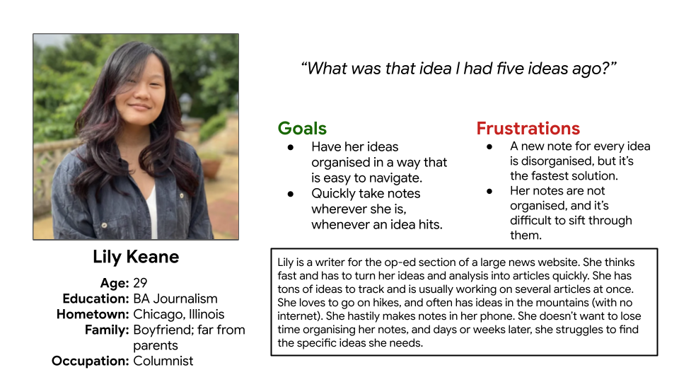
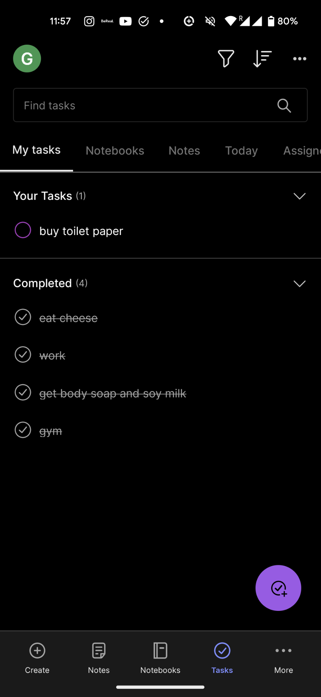
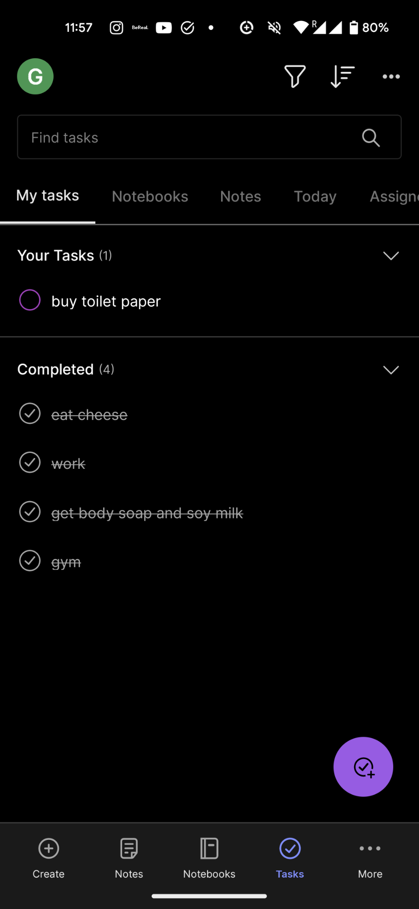
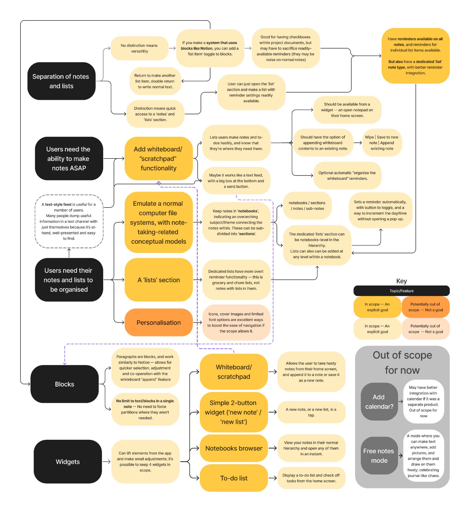
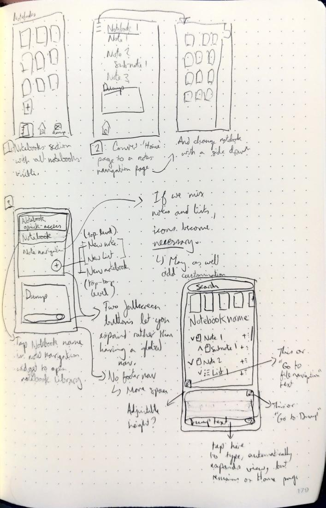
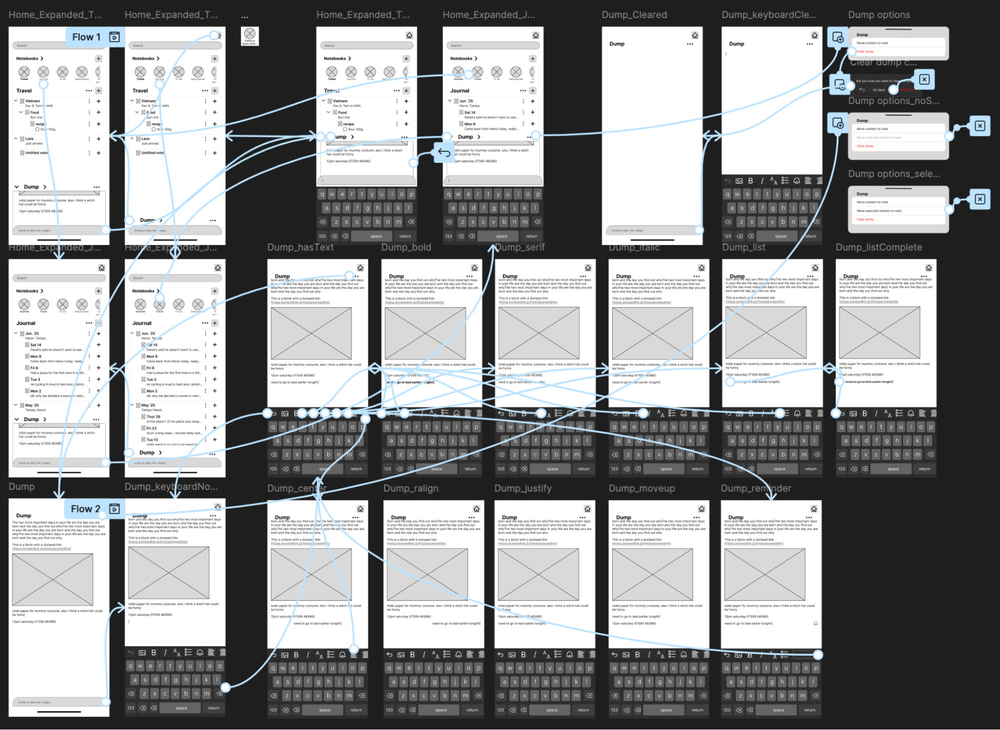
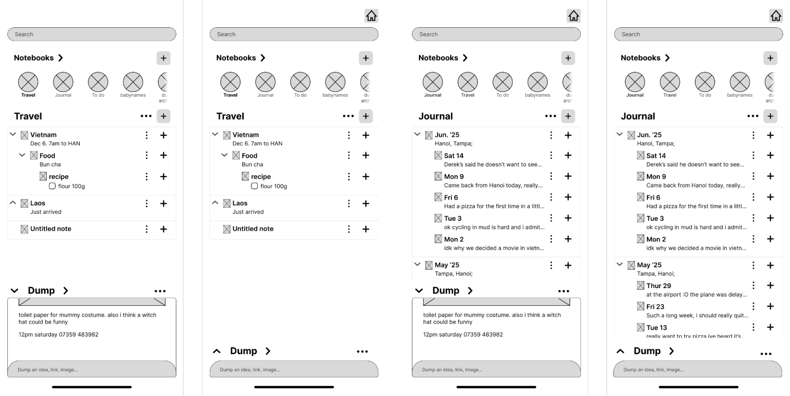
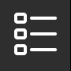
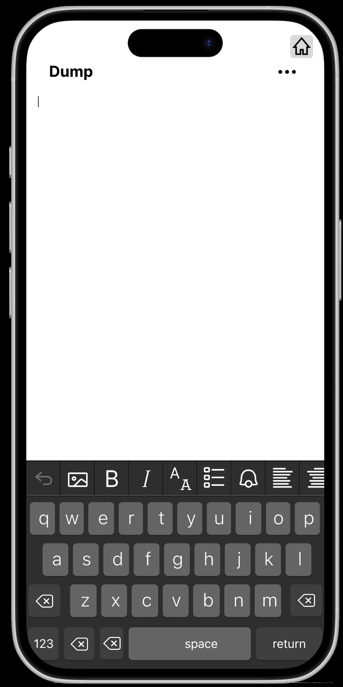
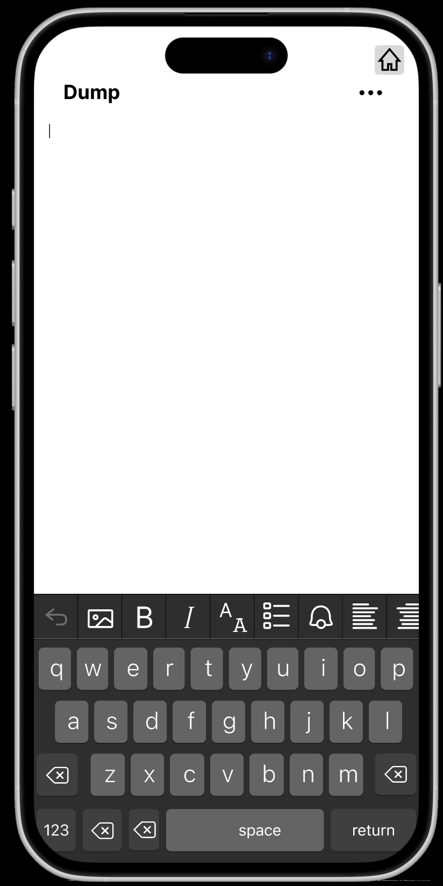

Notes App
Brief: Create a notes app that allows users to record their ideas as quickly as possible.
This is a personal project. I was not hired by anyone to design a notes app.
Empathise
Initial User Interviews
Interviews with users about their approach to notes and how they make and maintain them.
Interview Notes
Interviewee 1: 26F
- Uses iPhone Notes app to record ideas.
- A new note per idea.
- Says this is messy and inconvenient.
- It takes time to find a relevant note, so a new note is more convenient.
- Deletes them when the task is complete.
- Mostly tasks
- Maybe we could have a dedicated tasks section and a dedicated ideas section.
- Doesn't write down (interesting/artistic) ideas as much.
- A new note per idea.
- Mostly uses Microsoft Teams messages to record work-related information.
- Messages themselves on Instagram to record ideas sometimes, too.
Interviewee 2: 23F
- Uses Google Calendar to record events/chores.
- Can easily visualise the week.
- For more in-depth notes (like a birthday present with certain specifications), they use Google Keep and use the built-in reminder feature.
- Generally, new idea: new note, unless the new idea is related to some older note.
- During work, they can't use their phone, so they keep sticky notes and a pencil handy.
- Keeps a paper journal for thoughts, scrapbooking and reference items
- Maintenance in Google Keep (maybe) annually, that involves deleting stuff that isn't needed anymore.
- Gripes: need wifi/device to record notes; Google Keep doesn't sync with Google Calendar well anymore.
- However, they are generally content (because they haven't come across better ideas).
Interviewee 3: 27M
- For work:
- A6 notepad with to-do on the left and notes on the right — one double page per day.
- Notes, contact details and appointments are transferred to proper work-internal documents/file system (Word document or other internal documentation system) at the end of the day.
- Personal use relies on a private Discord server.
- Dedicated channel for random stuff (interesting stuff, PDF files, links).
- General channel used for appointment dates and important things to remember.
- Doesn't really delete stuff. Sometimes there's a channel dedicated to a particular project and if they want it out of their mind they delete the channel.
- Handy for transferring things between phone and desktop.
- Important things are pinned (temporarily?) in the channel.
- Problem with potentially getting banned; Relies on having an alt account in the server as a failsafe.
- Uses Notes app as more of a "whiteboard"; information that's being constantly overwritten (Animal Crossing turnip prices).
- Mostly because editing a message in Discord has a lot of friction; Less friction in Notes.
- Transfers this data to a web-based turnip price calculator.
- Uses ChatGPT for recording theories/ideas/vegan recipes/work profile.
- ChatGPT subscribers have access to a powerful memory system.
Interviewee 4: 25M
- Samsung phone's native notes app for ideas.
- A note per broad theme, I gather (e.g. one for trading strategies, one for Japanese phrases).
- Among these are to-do lists and grocery lists.
- Mostly goal-oriented; notes rarely conceptual (artistic/poetic/funny).
- Sometimes deletes the to-do and grocery lists, otherwise retains.
- Specifically retains notes related to language and work.
- A note per broad theme, I gather (e.g. one for trading strategies, one for Japanese phrases).
- Phone's native calendar app for appointments/plans.
- Push notifications are handy.
Findings
Users use whatever is at hand and convenient.
- They will use solutions that are impractical in the long term if they at least work in the instant that they are needed to.
- A notes app should do both: work now, and not at the expense of organisation later.
- A notes app should be at hand and it should be quick to make notes and set reminders.
- They split their notes among a lot of different apps that are convenient to them in different situations.
- Sometimes the user doesn't have internet.
- Offline support should be included. If there's a multi-device transfer feature, it should auto-sync when a connection is established.
Users tend towards solutions that happen to serve multiple functions.
- E.g. a notes app that allows the user to transfer media between devices.
- E.g. a calendar app with built-in reminders/push notification function.
- Notes are transient and the user can come up with organisation solutions wherever needed.
- One interviewee struggled to find relevant notes sometimes, others have rudimentary organisation methods.
- Organisation should be intuitive and automatic. The user shouldn't need to think so much.
- The app should be multi-functional.
Notes are ephemeral
- Notes are often edited and deleted.
- The app should make these easy to do, while allowing easy error recovery.
- It's useful to have a 'whiteboard' space with immediately important information that can be easily updated.
- This could be a note or a dedicated 'whiteboard' section.
Personas
Lily needs an app that collects her ideas cohesively and effortlessly. Note-taking shouldn't be an active task, but one that is ready for her whenever her brain conjures something up. She needs a net that catches and catalogues her ideas as they appear.

Alan needs an app that can hold onto all the things he wants to remember, for business and for pleasure. He needs something that's ready for him whenever he needs it without complication. He needs impermanent lists and reminders, but also permanent study notes.
Competitive Audit
Competitor screenshots
Evernote 2025/12/03

 

Notion 2025/12/03
Google Keep 2025/12/03


Notes App Competitive Audit
Above is a link to the competitive audit spreadsheet.
Below is a summary of the findings across 3 competitor apps: Evernote, Google Keep and Notion.
Competitor advantages
Notes apps today are significantly more refined and capable than we could ever have hoped for. Paid options have full suites of features to allow users to do little things like write shopping lists, all the way up to running and managing entire projects using only one note app's tools. Free options have powerful search and audio transcription features to make them more versatile without creating any amount of depth that might be difficult for an average user (they have a very broad target audience).
- Evernote's "scratchpad" serves the whiteboard feature that Interviewee 3 needed.
- It would be nice if you could add the scratchbook contents to an existing note, or even if there was a 'copy text' button, but you can only wipe it or make it into a new note.
- Notion has a great system of blocks, pages and subpages that makes every note versatile, quickly and easily editable, and integrates note organisation that avoids the user having to make too many conscious decisions.
- Evernote's division of notes and lists is maybe easier to use but less versatile.
- All apps focus on making everything easy to do with very few taps. This extends to the use of widgets to allow the user to even skip opening the app.
- Notion includes the ability to add identifying elements (icons, cover images), which improves navigation and personalisation.
- Deeper personalisation with different font types within notes.
- Great AI integration for the paid apps.
- Paid apps have an introductory tutorial when you first launch the app; Keep was pretty intuitive even without one.
- Friendly tone achieved through characters, illustrations in empty space (i.e. when you have no notes), and general touches of personality.
- Evernote has a built-in calendar, and Notion and Keep have calendar companion apps
- I think it's advantageous to have the calendar be a dedicated product, as users would open the notes or calendar app depending on what they need.
- Sync between them, or compatibility with other calendars, is the target utility.
Competitor disadvantages
Options that are free have little incentive to improve, making for an experience that feels a little bare and without the customisation of alternatives. On the other hand, paid options tend to overload the app with features, causing the app to feel bloated and run slowly, which can extend the learning period for new users.
- Note organisation is limited to just 'pinning' in Google Keep.
- The more powerful apps tend to be poorly optimised; losing seconds to loading times makes the user lose trust in the fact that this app is ready at all times.
- Image support is limited across all apps.
- Widgets don't quite go far enough – I can't have a note open and editable from my widget, and I can't append existing notes from the widget, only make new notes (all competitors) or open specific existing notes (Notion only).
- Paid apps are expensive for individuals, and offer very little for free; Some anti-consumer practices, especially from Evernote.
- Keep was pretty impersonal and didn't seem to aim to be 'delightful' to use.
- All apps had limits to the amount of text in a note, like Keep's hard limit, or the paid apps' soft limit on the number of blocks or storage you can use without paying more.
- All apps have problems with their file navigation systems, but with Keep and Evernote, it's particularly hard to find notes – there is only a tile view and no list view.
- Both seem to rely on search and pinning.
- Folders ("Notebooks") only granted to Evernote users who pay the premium price.
Define
Initial ideas
Feature list
- Architecture: a Notepads section and a Lists/Reminders section (footer navigation).
- Notepads have notes and subnotes, lists are just lists.
- Lists can also be implemented in notes.
- Note architecture has a system of "blocks" like notion. After typing, press the return key to finish the current block and make a new one.
- Whiteboard/scratchpad feature that works like a messenger.
- Keyboard-ready, clear "typing zone" that lets you type a new block.
- Options to wipe, convert the contents to a new note, or append it to an existing note.
- A note browser system that looks similar to a file browser system that users are probably used to.
- Expand/collapse all notebooks option; Recent sort; Favourites section.
- For this version, the focus is on making a functional, offline, digital notepad.
- Notion-style icon/cover image personalisation on notes potentially out of scope.
- No sign-up/share feature for now, or anything related to the internet.
Ideate
Wireframes


Test 1
This is a brief and less rigidly-structured user test to understand how well the initial design is understood. This will inform further ideation before entering the prototype phase.
Aims:
- To see if users can understand what the app is and does.
- To see if users find the placement and implied navigation to be intuitive.
- To identify areas of confusion to inform ideation before making the prototype.
Methodology:
- Preface by saying that these are screenshots and aren't interactable.
- For each of the four screens, ask:
- Could you tell me what this is?
- Could you tell me what you think you can do here?
And finally:
- What are your overall thoughts when you look at the four screens together?
Results
User 1
Home:
- Correctly identifies it as a note-taking app.
- Confusion about whether/why lists and notebooks are separate.
Notebooks:
- Described it as "tabs for notes".
- Identified that they can make notes and subnotes
- + button makes new subnotes, the arrow on the side of each note expands/hides it, and the kebab menu opens either options for the note or edit options.
- Wasn't sure about what the expand all/contract all buttons (top right) did.
- Identified that they can change their notebook with the tabs at the top.
Lists:
- Identified that there are no more notebooks.
- Potentially confusing to include lists under the big notebook name heading on the home screen.
- Assumption that you can make lists, list items and sub-items.
- Assumption that the bell icon opens a popup that lets you set the time
- This is incorrect; it is a toggle to turn reminders on/off for that list item.
- Unsure if the + button in the bottom right makes a new list or a new list item.
Dump:
- "Looks like a disorganised place where you can just write in a section."
- Maybe the text toolbar lets you add an image?
- Seems to understand it; not many thoughts to convey.
Overall:
- The home page has a lot going on.
- "Dump"'s purpose is unclear.
User 2
Home:
- First impression that it's a notes app or mind-mapper; They compare it to Obsidian, Miro and Notion.
- Confused by the arrow that expands the Dump section on the homepage.
- Maybe it expands the section? Or maybe it pushes the content in the dump up to the current notebook?
- "New note? New list? Can't I make a new list with a note?"
- States that they want these functions consolidated.
Notebooks:
- Identifies this as the section where all your notebooks are.
- "This is my note library".
- Says it "looks fine" and praises the organisation by separating notes with grey borders.
- "Not much confusion."
- Misinterprets the expand/contract all buttons as a full-screen mode.
- Finds the notepad section on the top, identifies it correctly.
- This is the same UI as on the home-page; Is it global?
Lists:
- "I don't get why it's called 'Dump'!" when they see the list called "Dump".
- Is it user-controlled?
- Identifies the ability to make lists, sub-items within lists and reminders.
- The structure of the app is somewhat confusing.
- "What is a sub-item in a list?"
- Reveals that the app has a lot of different kinds of things that look the same, and their interaction isn't necessarily clear on first glance.
Dump:
- "Dumps are when I write stuff without structure."
- I can structure it later? Is it for brainstorming?
- "I would just use dump or new notes and format it myself."
Overall:
- States that all of this should be on one page.
- I assume this means that the separation of notes and lists isn't useful. Incidentally Google Keep allows users to make new lists with their big floating + button, with no sections to separate notes from lists — This may be something worth imitating.
- Assumes that "notes" and "lists" are like templates that are there to save mental bandwidth but reduce user control.
Action
The tests showed confusion around the Dump and Lists section most of all.
Dump:
- The Dump is our USP and allows users to create notes quicker than any other app, so the Dump's presentation to new users may have to be reworked.
- The expand icon on the home page is admittedly not consistent with the iconography of 'expand' in the notebooks section. "Expand" should be represented the same way in different parts of the app.
Lists:
- The List section's main function is to provide a quicker way to allow users to make and store lists and quickly toggle reminders. The list section may be consolidated with the notebooks section to reduce unnecessary separation of features.
- I intend to make it possible to make lists within notes, anyway, so I can adopt the ability to make lists from the Notebooks section's '+' icon, and put the 'reminder' toggle on list item-type blocks.
Other:
- The expand/contract buttons confused both users. I don't think this is a serious problem, since it would be easy for a user to simply press it and see what it does, but it did imply that the icons on the buttons to expand/contract all notes were hard to understand. I'll keep this in mind for when I make the high-fidelity prototype.
- The notebooks tab easily allows a user to switch between recent notebooks, but the use of the same UI in the Home screen and the Notebooks section caused confusion. At the same time, there's no way to see all of your notebooks in a nice full-screen tile view.
- I will rework the function and means of access to the separate 'notes' and 'notebook' levels of the navigation.
Iteration 2
The image shows paper wireframes for a new iteration of the app. For this version, I have removed the bottom navigation and merged the note and list functionality into a single navigation screen. The dump takes up a portion of the bottom half of the screen, and the notebook navigation takes up the rest of the screen.
Prototype
Low-fidelity prototype (version 1)
Above is the first version of the low-fidelity prototype. All assets were made by me with the exception of the iPhone keyboard asset (Denis Rojčyk at https://www.figma.com/community/file/768726574016795759, accessed on 5th January 2026).
As this is an early version of a complex application, the prototype does not demonstrate every interaction and combination of interactions.
Functionality for creating new notes will be pretty much identical to other apps, especially Notion. For that reason, I decided to focus on prototyping our USP, the Dump.
For this version, the goals are:
(i) to demonstrate the layout and general navigation through the app;
(ii) show how the "Dump" feature fits in;
(iii) show how the text toolbar will work.
Home screen
The home screen contains 4 major sections (top to bottom): the search bar, the notebooks section, the notes (within the currently-selected notebook) section, and the dump.
※ The home button in the top corner is used only in the prototype to allow the user to return to the start of the flow. Most modern mobile interfaces allow users to 'go back' by swiping from the left or right side of the screen, making 'back' buttons unnecessary. This functionality is clunky to implement in Figma, so the 'home' button was my band-aid solution.
The search bar will match whatever is typed in and find all notebooks and notes that include the matched text.
The notebooks section is a horizontal scroll of icons, likely user-set emojis, with the name of the notebook beneath it. When a user taps a notebook, it pins to the left side, the text for the title is made bold and the notes section below updates to show all the notes and sub-notes within that notebook. Tapping the > should take the user to a tile view of all their notebooks, but it may not be necessary to keep this feature depending on how many notebooks users tend to really need. In the current prototype, users can swap between the 'Travel' and 'Journal' notebooks; other notebooks are currently only present to demonstrate the horizontal scroll.
The notes section displays the notes and subnotes within the selected notebook, and allows users to open, delete and move notes, as well as expand and contract notes with subnotes, and show/hide a preview of the note below the title. It is the workspace where users can manage their notes. This section is mostly static in this prototype save for the vertical scroll and size change depending on the size of the dump.
The dump is a readily-available, open note that users can quickly "dump" ideas, links, images, etc. The user can show/hide a preview of the content already in the dump, and can tap the '...' meatball menu to open a window that lets them move the content to a note, or clear the dump. Tapping the 'Dump >' text takes the user to a full-screen version of the dump. Users can also tap the text input bar at the bottom of the screen to open a keyboard to allow them to quickly "dump" something from the homescreen:

The Dump and text tools

The user can open the dump from the home screen and see it full-screen. On tapping the text input bar at the bottom of the screen or ideally anywhere on the screen, a cursor and keyboard appear.

The text toolbar has a horizontal scroll, and almost every button has some functionality in the current prototype. From left to right:
- A back button: reverses changes.
 An image insertion button: This currently has no functionality.
An image insertion button: This currently has no functionality. Bold: applies 'bold' font weight to the current block/selected text.
Bold: applies 'bold' font weight to the current block/selected text. Italic: applies 'italic' font style to the current block/selected text.
Italic: applies 'italic' font style to the current block/selected text.- Sans serif/serif toggle: toggles (currently) between the 'Inter' and 'Inika' fonts on the current block/selected text.
-  List toggle (shown below): toggles current block between a 'list'-type block and a normal text block.
- Reminder (shown below): adds a reminder to the current block and adds a little bell icon to the block in the text space.
- Left-,
 center- and
center- and  right-align, and justify: changes the alignment of the current block.
right-align, and justify: changes the alignment of the current block.  Move down/move up: moves the current block down or up relative to other blocks in the text space.
Move down/move up: moves the current block down or up relative to other blocks in the text space.

The list-toggle (above and left) converts the block to a list item that can be ticked and crossed off.
The reminder toggle (above and right) allows the user to set the date and time of the reminder from the text toolbar. In the current prototype the user can only turn the reminder on/off by pressing the bell icon on the toolbar. An icon showing that the block has a reminder attached to it also appears in the text space.
 

Users can also clear the dump by tapping the meatball menu button in the top corner and selecting 'Clear dump'. The 'Move content to note' button currently has no functionality.
Dump expand/contract button
As a final update and in contrast to the screenshots above, I have added a button to expand/contract the dump and removed the button to go to the 'Notebooks' screen.

In the first user test, icons that looked similar to these expand/contract buttons were mistaken for a 'full-screen' mode, so it made sense to use them for the implementation of what is essentially a real 'full-screen' mode here. I think that these icons are more intuitive than the '>' icon, and it has allowed me to include an icon on the 'Dump' screen to return to the home page, too – I think that a back button is probably unnecessary but if the user has it in their mind that the current page is an "expansion" rather than a new page, a button to shrink again would make sense. This helps to create the sense that the app's full functionality is within one main screen, and removes the need to rely on the 'Home' button in the corner.
I will tell users in the test that the 'Home' button is there if they ever feel like they need to start again from the beginning, but isn't a feature of the app.
I also removed the '>' from the 'Notebooks' section heading, as it had no functionality, which would be confusing for users in tests. It can also be re-added at a later date if tests show that there is a need for a full-page notebooks screen.
Test 2
This is the second user test for the product. This time, the test will have more structure as I examine how users interact with the existing flows.
Aims:
- To see if users can understand what the app is and does.
- To compare what users would do with how the app is actually structured.
- To find areas where users are confused or frustrated, so that the user experience can be improved.
- To see what users think that the buttons with no functionality will do when the product is complete.
Methodology:
- Ask the user what phone they use and how often they spend using it each day.
- Warn the user that this is not a fully-functioning app:
- Tell them that many of the buttons don't do anything.
- Let them know that most of the graphical elements of the design haven't been added yet, and that we are just testing the overall functionality of the app.
- Let them know that later in the test, a "home" button will appear in the corner if they ever get stuck and want to return to the start, but this is a feature of the test and not the app.
- Warn the user that you will be reading from a script to maintain consistency across tests with other users.
- Tell the user to think out loud throughout the test, and particularly to point out anything that feels unintuitive or unexpected to them, at any time.
- Ask the user to look at the home screen and give me their first impressions on what the app is and does, from top to bottom.
- Home screen tasks:
- What is the list in the middle showing? What can you infer from how it's structured?
- How would you see notes from the 'Journal' notebook?
- How do you feel about the layout here [in the 'Journal' section]?
- What kinds of notebooks/how many would you keep if you were using this app for yourself?
- What do you think the 'Dump' is? [If they haven't said anything already]
- How would you add content to your Dump?
- Before you do that, what do you think the other buttons around the Dump do?
- How do you feel about the Dump right now?
- Dump tasks:
- First, where are you now? [In the Dump section]
- What are your first impressions of what you see?
- Do you see the bar above your keyboard? What do you think it does?
- Go ahead and try out some of the buttons on the toolbar. Your changes won't be able to be applied simultaneously, so you'll have to undo your changes to try other buttons. Make sure to tell me what you're thinking before and after you press each button.
- Would you make use of the Dump if it was a feature in your favourite note-taking app?
- On your own phone, how would you go back to the home screen (without using the home button)?
- Questions after tasks:
- What do you think of what you've seen today? Do you have any broad opinions about the app right now?
- Supposing that this app was in a finished condition, do you think that you would use it over your current note-taking method?
Results
User 1
(Results to be added)
User 2
(Results to be added)
User 3
(Results to be added)
Action
(Actions to be determined based on test results)